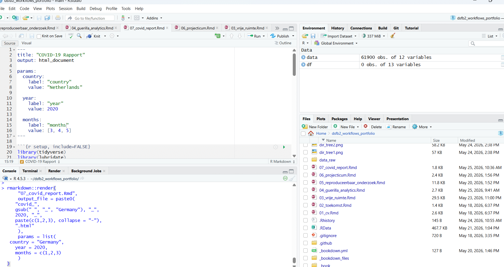

Hoofdstuk 13 COVID‑19 in Netherlands (2020)
De data wordt gefilterd op:
- land: Netherlands
- jaar: 2020
- maanden: 3, 4, 5
#read the Dataset sheet into “R”. The dataset will be called "data".
data <- read.csv("https://opendata.ecdc.europa.eu/covid19/casedistribution/csv", na.strings = "", fileEncoding = "UTF-8-BOM")
colnames(data)## [1] "dateRep"
## [2] "day"
## [3] "month"
## [4] "year"
## [5] "cases"
## [6] "deaths"
## [7] "countriesAndTerritories"
## [8] "geoId"
## [9] "countryterritoryCode"
## [10] "popData2019"
## [11] "continentExp"
## [12] "Cumulative_number_for_14_days_of_COVID.19_cases_per_100000"#filteren op land, jaar en maand
df <- data %>%
mutate(
date = dmy(dateRep),
year = as.integer(year),
month = as.integer(month)
) %>%
filter(
countriesAndTerritories == params$country,
year == params$year,
month %in% params$months
) %>%
arrange(date)## ## COVID‑19 rapport voor Netherlands## ### Jaar: 2020## ### Maanden: 3, 4, 5ggplot(df, aes(x = date, y = cases)) +
geom_col(fill = "steelblue") +
labs(
title = paste("Daily new cases in", params$country),
x = "Date",
y = "cases"
)
ggplot(df, aes(x = date, y = deaths)) +
geom_col(fill = "firebrick") +
labs(
title = paste("Daily deaths in", params$country),
x = "Date",
y = "Deaths"
)
Hier is te zien hoe dit RMarkdown bestand werkt:

13.0.1 bronnen die gebruikt zijn voor de vrije opdracht codering:
- Anthropic. (2024). Model Context Protocol (MCP) documentation. https://docs.anthropic.com
- Corey Schafer. (2016–2024). Python tutorials [YouTube‑kanaal]. https://www.youtube.com/c/CoreySchafer
- FreeCodeCamp. (2024). How to build a simple command-line chatbot in Python. https://www.freecodecamp.org
- jsonlite — Ooms, J. (2024). jsonlite: A robust JSON parser and generator for R. https://cran.r-project.org/package=jsonlite
- LangChain. (2023). LangChain documentation. https://python.langchain.com
- LangChain. (2024). LangGraph documentation. https://langchain-ai.github.io/langgraph/
- LM Studio. (2024). LM Studio documentation. https://lmstudio.ai/docs
- Microsoft. (2024). Python best practices. https://learn.microsoft.com/en-us/training/browse/?products=python
- Python Software Foundation. (2024). Python documentation. https://docs.python.org
- Real Python. (2024). Working with JSON in Python. https://realpython.com/python-json
- R Core Team. (2024). R: A language and environment for statistical computing. https://www.r-project.org
- StackOverflow. (2024). Common patterns for reading/writing JSON in Python. https://stackoverflow.com
- Tech With Tim. (2024). Python beginner tutorials [YouTube‑kanaal]. https://www.youtube.com/c/TechWithTim
- Wickham, H. (2014). tibble: Simple data frames. https://cran.r-project.org/package=tibble
- Wickham, H. (2017). Tidyverse. https://www.tidyverse.org
- W3Schools. (2024). Python File Handling. https://www.w3schools.com/python/python_file_handling.asp
13.0.2 bronnen voor theoretisch kader vrije opdracht:
- Andrews, S. (2010). FastQC: A quality control tool for high throughput sequence data. https://www.bioinformatics.babraham.ac.uk/projects/fastqc/
- Bolger, A. M., Lohse, M., & Usadel, B. (2014). Trimmomatic: A flexible trimmer for Illumina sequence data. Bioinformatics, 30(15), 2114–2120. https://doi.org/10.1093/bioinformatics/btu170
- Bray, N. L., Pimentel, H., Melsted, P., & Pachter, L. (2016). Near-optimal probabilistic RNA-seq quantification. Nature Biotechnology, 34(5), 525–527. https://doi.org/10.1038/nbt.3519
- Broad Institute. (2024). Picard Toolkit. https://broadinstitute.github.io/picard/
- Dobin, A., et al. (2013). STAR: Ultrafast universal RNA-seq aligner. Bioinformatics, 29(1), 15–21. https://doi.org/10.1093/bioinformatics/bts635
- Ewels, P., Magnusson, M., Lundin, S., & Käller, M. (2016). MultiQC: Summarize analysis results for multiple tools. Bioinformatics, 32(19), 3047–3048. https://doi.org/10.1093/bioinformatics/btw354
- Grüning, B., et al. (2018). Bioconda: Sustainable and comprehensive software distribution for the life sciences. Nature Methods, 15(7), 475–476. https://doi.org/10.1038/s41592-018-0046-7
- Kim, D., Langmead, B., & Salzberg, S. L. (2015). HISAT: A fast spliced aligner with low memory requirements. Nature Methods, 12(4), 357–360. https://doi.org/10.1038/nmeth.3317
- Li, H., et al. (2009). The Sequence Alignment/Map format and SAMtools. Bioinformatics, 25(16), 2078–2079. https://doi.org/10.1093/bioinformatics/btp352
- Liao, Y., Smyth, G. K., & Shi, W. (2014). FeatureCounts: An efficient general-purpose read summarization program. Bioinformatics, 30(7), 923–930. https://doi.org/10.1093/bioinformatics/btt656
- Love, M. I., Huber, W., & Anders, S. (2014). Moderated estimation of fold change and dispersion for RNA-seq data with DESeq2. Genome Biology, 15(12), 550. https://doi.org/10.1186/s13059-014-0550-8
- Martin, M. (2011). Cutadapt removes adapter sequences from high-throughput sequencing reads. EMBnet.journal, 17(1), 10–12. https://doi.org/10.14806/ej.17.1.200
- Patro, R., Duggal, G., Love, M. I., Irizarry, R. A., & Kingsford, C. (2017). Salmon provides fast and bias-aware quantification of transcript expression. Nature Methods, 14(4), 417–419. https://doi.org/10.1038/nmeth.4197
- Ritchie, M. E., et al. (2015). Limma powers differential expression analyses for RNA-sequencing and microarray studies. Nucleic Acids Research, 43(7), e47. https://doi.org/10.1093/nar/gkv007
- Robinson, M. D., McCarthy, D. J., & Smyth, G. K. (2010). edgeR: A Bioconductor package for differential expression analysis. Bioinformatics, 26(1), 139–140. https://doi.org/10.1093/bioinformatics/btp616
13.0.3 bronnen introductie projecticum:
Balk, Steven P., Yoo-Joung Ko, and Glenn J. Bubley. 2003. “Biology of Prostate-Specific Antigen.” Journal of Clinical Oncology 21 (2): 383–91. https://doi.org/10.1200/JCO.2003.02.083.
“Expanded Prostate Cancer Index Composite (EPIC) University of Michigan Medical School.” n.d. https://medschool.umich.edu/departments/urology/research/quality-life-tools/epic. Accessed May 18, 2026.
kanker.nl, Stichting. n.d.a. “De prostaat Kanker.nl.” https://www.kanker.nl/kankersoorten/prostaatkanker/algemeen/informatie-over-de-prostaat. Accessed May 18, 2026.
———. n.d.b. “Het stadium van prostaatkanker Kanker.nl.” https://www.kanker.nl/kankersoorten/prostaatkanker/diagnose/het-stadium-van-prostaatkanker. Accessed May 18, 2026.
“The American Urological Association Symptom Index for Benign Prostatic Hyperplasia Journal of Urology.” n.d. The Journal of Urology. Accessed May 18, 2026.